量表心理計量檢驗
各組已經寫好題目、發出預試問卷，也完成草率作答篩檢。接下來要用資料回答三個問題：
- 哪些題目寫得好、哪些要刪除？（項目分析、因素分析）
- 題目背後有幾個向度，是否和事例歸納出來的向度一致？（因素分析）
- 每個向度的題目是否一致地測量同一件事？（信度）
分析完成後，再和既有量表比較（第六章），說明這份量表在企業裡的用途（第七章），最後準備期中發表。本網站依這個順序說明，每個單元都對應 Word 企劃書範本 的章節。練習題使用「工作意義感」的示意資料；課堂示範使用玻璃心預試資料，見Topic 05 課堂投影片。
名詞對照
| 中文 | 英文 | 意思 |
|---|---|---|
| 項目分析 | item analysis | 逐題檢查題目品質的分析 |
| 決斷值 | critical ratio，CR | 高分組與低分組在一題上的平均數差異（t 值） |
| 校正題總相關 | corrected item-total correlation | 一題與其他題目總分的相關 |
| 刪除後 α | alpha if item deleted | 刪掉一題後，其餘題目的 α |
| 因素 | factor | 造成一群題目一起變動的共同原因，對應構念的向度 |
| 負荷量 | factor loading | 一題與一個因素的關聯強度 |
| 共同性 | communality | 一題的變異中，由共同因素解釋的比例 |
| 特徵值 | eigenvalue | 一個因素能解釋多少題目的變異 |
| 轉軸 | rotation | 調整因素的方向，讓負荷量容易解讀 |
| 解釋變異量 | variance explained | 因素共同解釋了題目多少比例的變異 |
工具
| 工具 | 用途 |
|---|---|
| 項目分析 Excel 範本 | 貼上資料後自動計算決斷值、校正題總相關、刪除後 α |
| JASP | 探索性因素分析與信度；免費，官網下載；偏好設定可切換繁體中文介面 |
| 玻璃心預試練習資料 | 課堂練習用的 185 份模擬資料 |
單元一：項目分析
1.1 為什麼要做項目分析
題庫裡的每一題都是依事例寫出來的，但寫的時候無法確定填答者會怎麼理解。有些題目可能太籠統、有些和構念無關、有些反向題忘了反向計分。項目分析用預試資料逐題檢查，找出需要修改或刪除的題目。本課程看三個指標：決斷值、校正題總相關、刪除後 α。
1.2 決斷值是什麼
一題好的題目，在構念程度高的人和程度低的人身上，應該會得到不同的分數。決斷值（critical ratio，CR）就是檢查這件事：先用總分把填答者分成高分組與低分組，再比較兩組在這一題的平均數差距有多大。差距越大、越穩定，這一題越能區分不同程度的人（Kelley, 1939）。
1.3 決斷值怎麼算
以下用 11 位填答者的示意資料，一步一步計算 M1 與 M3 兩題的決斷值。
步驟一：算出每個人的總分，由高到低排序
把每個人所有題目的分數加起來（反向題要先反向）。下表已依總分排序。
| 填答者 | 總分 | M1 | M3 | 分組 |
|---|---|---|---|---|
| P01 | 42 | 6 | 4 | 高分組 |
| P02 | 40 | 5 | 3 | 高分組 |
| P03 | 39 | 6 | 4 | 高分組 |
| P04 | 37 | 5 | 3 | |
| P05 | 35 | 4 | 4 | |
| P06 | 33 | 4 | 3 | |
| P07 | 31 | 4 | 3 | |
| P08 | 29 | 3 | 4 | |
| P09 | 27 | 2 | 3 | 低分組 |
| P10 | 25 | 3 | 4 | 低分組 |
| P11 | 22 | 2 | 3 | 低分組 |
步驟二：取前 27% 為高分組、後 27% 為低分組
11 × 27% ≈ 3，所以總分最高的 3 人（綠底）為高分組，最低的 3 人（黃底）為低分組，中間 5 人不列入比較。實際資料中，切點上有同分的人都納入該組，所以人數會略多於 27%。只取兩端是為了讓高低兩組的差異明顯。
步驟三：分別計算兩組在這一題的平均數與變異數
M1 低分組：2、3、2，平均數 ＝ 2.33，變異數 ＝ 0.33
變異數的算法：每個分數減平均數後平方，加總，再除以人數減 1
步驟四：代入 t 值公式
M1：t ＝（5.67 − 2.33）÷ √（0.33 ÷ 3 ＋ 0.33 ÷ 3）＝ 3.33 ÷ 0.47 ＝ 7.07
M3：高分組 4、3、4，低分組 3、4、3；t ＝（3.67 − 3.33）÷ 0.47 ＝ 0.71
分子是兩組的平均數差距；分母是這個差距的抽樣誤差，也就是換一批人時差距可能變動的幅度。t 值越大，表示兩組差距相對於誤差越明顯。本課程以 t 值 3.00 以上為保留標準。M1 的 t 值 7.07，能區分高低分者；M3 只有 0.71，高分組和低分組在這一題的回答差不多，表示這一題無法區分構念程度不同的人。
實際資料有上百人，不需要手算：項目分析 Excel 範本會自動完成四個步驟。
1.4 校正題總相關
相關係數介於 −1 到 1，表示兩個分數一起變動的程度。正相關表示一個高、另一個也高；接近 0 表示兩者沒有關係；負相關表示一個高、另一個反而低。
校正題總相關（corrected item-total correlation）是這一題的分數與「其他題目加總」的相關。「校正」指總分不包含這一題本身，因為這一題本身也在總分裡，直接和總分算相關會高估。如果這一題和其他題目測的是同一個構念，填答者在這一題分數高，在其他題目通常也高，相關就會是中高的正值。本課程以 .30 以上為保留標準。出現負相關時，多半是反向題沒有反向計分，詳見測量基礎 單元四。
1.5 刪除後 α
Cronbach’s α 表示一組題目彼此一致的程度（測量基礎 單元二）。刪除後 α（alpha if item deleted）是假設刪掉這一題，其餘題目的 α 會變成多少。如果刪除後 α 高於全量表 α，表示這一題拉低了題目之間的一致性。這個指標只用來輔助判斷：刪除後 α 只上升一點點時，題目內容如果重要，仍然可以保留。
1.6 判讀與處理
| 指標 | 保留標準 | 未達標準時 |
|---|---|---|
| 決斷值 | t ≥ 3.00 | 題目無法區分高低分者，檢查是否太容易同意或太籠統 |
| 校正題總相關 | ≥ .30 | 題目與其他題目方向不一致；負值時先檢查反向計分 |
| 刪除後 α | 不高於全量表 α | 這一題拉低一致性，對照題目內容判斷 |
- 未達標準的題目，先回到題目內容：是否與構念定義對應、用詞是否籠統
- 標記為「檢查」，進入因素分析後再決定是否刪除
- 刪除時在企劃書 5.1 的表格寫出題號、數值與理由
1.7 Excel 範本操作
- 原始資料工作表：從 A1 貼上，第 1 列為欄位名稱（編號、題目代號），第 2 列起每列一位填答者；作答秒數、檢核題等非題目欄位先刪除
- 反向題設定工作表：B2 填量尺點數（六點量表填 6）；資料還沒反向的題目在 C 欄選「是」，已反向的不要再選
- 項目分析工作表：查看全量表 α，以及每一題的決斷值、校正題總相關、刪除後 α 與判定
- 把結果抄到企劃書 5.1 的表格，判定為「檢查」的題目寫出理由
1.8 練習：工作意義感 8 題
下表為示意資料，全量表 α ＝ .86。依三項標準判斷每一題要保留或檢查，按下按鈕後會顯示解析。
| 題號 | 題目 | 決斷值 t | 校正題總相關 | 刪除後 α | 你的判斷 | 解析 |
|---|---|---|---|---|---|---|
| M1 | 我的工作對他人有幫助 | 8.12 | .58 | .84 | ||
| M2 | 我認為自己的工作有價值 | 7.40 | .52 | .85 | ||
| M3 | 我的辦公環境很舒適 | 2.41 | .21 | .88 | ||
| M4 | 我做的事情與公司目標有關 | 6.85 | .47 | .85 | ||
| M5 | 我常懷疑這份工作有什麼意義 | 5.10 | −.28 | .89 | ||
| M6 | 工作讓我覺得人生更充實 | 9.03 | .61 | .83 | ||
| M7 | 我喜歡和同事一起吃午餐 | 4.62 | .27 | .87 | ||
| M8 | 我能說出自己的工作帶來哪些改變 | 7.77 | .55 | .84 |
1.9 寫入企劃書 5.1
Word 範本 5.1 的表格欄位為：題號、決斷值（CR）、校正題總相關、刪除後 α、決定與理由。表格前先寫一段說明：有效樣本數、反向題處理、高低分組的切點與人數、三項標準與全量表 α。所有題目都要列出。
單元二：因素分析前的準備
2.1 探索性因素分析在做什麼
假設工作意義感有兩個向度：「對他人的貢獻」與「工作帶來的改變」。同一個向度的題目測的是同一件事，所以填答者在這些題目上的分數會一起高、一起低，題目之間的相關較高；不同向度的題目之間，相關較低。探索性因素分析（exploratory factor analysis，EFA）從所有題目兩兩之間的相關，找出哪些題目會一起變動，把它們歸成同一個因素（factor）。每一個因素代表題目背後的一個共同原因，對應構念的一個向度。
「探索性」指分析時不事先告訴軟體哪一題屬於哪個向度，由資料決定。分析完成後，再對照事例歸納出來的向度，看兩者是否一致。
2.2 KMO 取樣適切性量數
如果題目之間幾乎沒有相關，就找不出共同的因素。KMO（Kaiser-Meyer-Olkin）檢查題目之間的相關是否足以抽出共同因素，數值介於 0 到 1，越接近 1 越適合（Kaiser, 1974）。JASP 輸出中的「Overall MSA（整體 MSA）」就是 KMO 值，每一題也有自己的 MSA。
| KMO | 判讀 |
|---|---|
| .90 以上 | 極佳 |
| .80 至 .89 | 良好 |
| .70 至 .79 | 中等 |
| .60 至 .69 | 普通，可以進行 |
| .60 以下 | 不適合進行因素分析；先找出 MSA 特別低的題目，考慮刪除後重跑 |
2.3 Bartlett 球形檢定
檢定的虛無假設是「所有題目之間的相關都是 0」。p < .05 時拒絕虛無假設，表示題目之間存在相關，可以進行因素分析。樣本數較大時這項檢定幾乎都會顯著，因此以 KMO 為主要依據。企劃書要寫出 χ² 值、自由度與 p 值，例如 χ²(105) ＝ 779.88，p < .001。
2.4 樣本數
預試有效樣本至少為題數的 5 倍，且不低於 100 人（Topic 04）。篩檢後的有效樣本也要符合這個標準；樣本太少時，因素結構不穩定，換一批人可能得到不同結果。
單元三：因素數目、萃取與轉軸
3.1 特徵值
每一題經過標準化後的變異都是 1，所以 8 題的總變異是 8。特徵值（eigenvalue）表示一個因素能解釋多少變異：特徵值 3.2 表示這個因素解釋了相當於 3.2 題的變異。第一個因素的特徵值最大，後面依序遞減。
3.2 決定因素數目
| 方法 | 做法 | 提醒 |
|---|---|---|
| 特徵值大於 1 | 保留特徵值大於 1 的因素，理由是一個因素至少要解釋一題的變異 | 容易保留過多因素 |
| 陡坡圖 | 把特徵值依序畫成折線，看曲線在哪裡由陡轉為平緩，保留轉折點之前的因素 | 轉折點不明顯時難以判斷 |
| 平行分析 | 產生和實際資料同樣人數、題數的隨機資料，計算隨機資料的特徵值；實際資料的特徵值高於隨機資料的才保留 | JASP 預設方法，建議優先使用 |
平行分析的道理是：即使題目之間完全沒有關係，隨機資料算出來的前幾個特徵值也會略大於 1。只有高於隨機資料的特徵值，才代表資料中有真正的共同因素（Hayton et al., 2004）。
平行分析的結果要再對照事例歸納出來的向度數目。兩者不一致時，比較不同因素數目的結果，選擇題目歸屬清楚、每個因素都能依題目內容命名的方案，並在企劃書說明理由。
3.3 萃取方法：主成分分析與共同因素分析
| 主成分分析 | 共同因素分析 | |
|---|---|---|
| 分析哪些變異 | 題目的全部變異，包含測量誤差 | 只分析題目之間共有的變異 |
| 目的 | 把多題濃縮成少數幾個分數 | 找出題目背後的構念 |
| JASP 選單 | Principal Component Analysis（主成分分析） | Exploratory Factor Analysis（探索性因素分析），萃取方法選最小殘差法 |
| 解釋變異量 | 較高，因為把誤差也算進去 | 較低 |
量表發展的目的是測量背後的構念，題目中的測量誤差不屬於構念，因此本課程使用共同因素分析，萃取方法採用 JASP 預設的最小殘差法（minimum residual）（Fabrigar et al., 1999）。另一個常見的共同因素萃取方法是主軸因素法（principal axis factoring），結果通常相近。
3.4 轉軸
電腦第一次算出的因素（未轉軸解）通常讓多數題目都落在第一個因素上，不容易看出結構。轉軸（rotation）是調整因素的方向，讓每一題盡量只在一個因素上有高負荷量，其他因素接近 0，結果比較容易解讀。轉軸不會改變所有因素合計解釋的變異量。
| 轉軸 | 假設 | 例子 |
|---|---|---|
| 直交轉軸 orthogonal | 因素之間不相關，因素間相關固定為 0 | varimax |
| 斜交轉軸 oblique | 允許因素之間相關，另外輸出因素間相關 | promax（JASP 預設）、oblimin |
同一構念的不同向度通常彼此相關，例如對他人的貢獻較高的人，通常也感覺工作帶來較多改變，因此本課程採用斜交轉軸（Fabrigar et al., 1999）。斜交轉軸會產生兩種負荷量表：JASP 預設輸出的負荷量表是樣式矩陣（pattern matrix），表示每個因素對題目的獨特影響，判讀與刪題都看這一張；另外可勾選的結構矩陣（structure matrix）是題目與因素的相關，不用於刪題。
單元四：讀結果與刪題
4.1 讀負荷量表
負荷量表的每一列是一題，每一欄是一個因素。負荷量（factor loading）表示這一題和這個因素的關聯強度，數值大致介於 −1 到 1，絕對值越大關聯越強。每一題找出絕對值最高的負荷量，就是這一題所屬的因素；再對照這一題原本預設的向度。
JASP 預設只顯示 .40 以上的負荷量，低於 .40 的格子會留白。建議把顯示門檻改成 0，才看得到每一題在所有因素上的負荷量，跨負荷的題目也才看得出來。
4.2 共同性
共同性（communality）是一題的變異中，可以由所有共同因素解釋的比例，介於 0 到 1。共同性 .60 表示這一題 60% 的變異和其他題目共有，其餘 40% 是這一題自己的變異（包含誤差），稱為獨特性。JASP 的負荷量表最右欄是 Uniqueness（獨特性），共同性 ＝ 1 − 獨特性，Word 範本 5.2 的負荷量表要填共同性。
共同性在 .40 到 .70 之間是常見的範圍；低於 .40 表示這一題和其他題目的共同部分少，可能與其他題目無關，也可能代表還有一個沒有抽出的因素（Costello & Osborne, 2005）。共同性低的題目要搭配負荷量與題目內容判斷：負荷量也低，通常刪除；負荷量達標準、內容符合定義，可以保留並在企劃書說明。
4.3 解釋變異量
JASP 的 Factor Characteristics（因素特徵）表列出每個因素的負荷量平方和（SumSq. Loadings）、可解釋變異量之百分比（Proportion var.）與累積（Cumulative）。累積欄的最後一個數字，就是所有因素合計解釋了題目多少比例的變異，例如 46% 表示題目總變異中有 46% 由這幾個因素解釋。
解釋變異量沒有統一門檻。社會科學常以 60% 左右作為參考，也接受較低的數值（Hair et al., 2019）；共同因素分析只分析共有的變異，數值通常低於主成分分析。企劃書如實報告累積解釋變異量即可，數值偏低時說明可能的原因，例如題目內容較分散。表中有轉軸前與轉軸後兩組數值，累積值相同。
4.4 刪題規則
- 最高的負荷量低於 .40，刪除（Hinkin, 1998）
- 在第二個因素的負荷量也達 .32，屬於跨負荷，刪除（Costello & Osborne, 2005）
- 一次刪一題，從問題最明顯的題目開始，刪完重跑，再看下一題；刪一題之後，其他題目的負荷量也會改變
- 刪題後每個向度至少保留 3 題，題目內容仍涵蓋構念定義
4.5 結構和事例歸納的向度不一致時
| 情況 | 可能的原因 | 處理 |
|---|---|---|
| 兩個向度合併成一個因素 | 兩個向度在填答者心中是同一件事 | 檢查兩個向度的定義是否可以區分；合併後重新命名、修改定義 |
| 一個向度拆成兩個因素 | 向度內有兩種不同的行為或想法 | 依題目內容分成兩個向度，每個因素至少 3 題才保留 |
| 題目落在其他向度 | 題目寫法偏向另一個向度 | 檢查題目內容，改歸向度或刪除 |
| 反向題自成一個因素 | 措辭造成的方法因素 | 確認反向計分正確，檢討反向題寫法（題項與量表設計 單元三） |
評分標準看的是解釋是否誠實。在企劃書 5.2 寫出與預設的差異、可能的原因與處理方式，不要為了和事例歸納的向度一致而強行對應。
4.6 因素命名
依每個因素所包含的題目內容命名。與原本預設的向度一致時沿用原名；內容改變時重新命名，並修改向度定義。
4.7 練習：工作意義感兩個向度
下表為示意資料，W1–W4 預設屬於「對他人的貢獻」，W5–W8 預設屬於「工作帶來的改變」。依刪題規則判斷每一題要保留或刪除。
| 題號 | 因素一 | 因素二 | 共同性 | 你的判斷 | 解析 |
|---|---|---|---|---|---|
| W1 | .75 | .02 | .57 | ||
| W2 | .69 | .08 | .49 | ||
| W3 | .28 | .19 | .12 | ||
| W4 | .71 | −.05 | .50 | ||
| W5 | .04 | .77 | .60 | ||
| W6 | .36 | .52 | .45 | ||
| W7 | −.03 | .70 | .48 | ||
| W8 | .10 | .66 | .46 |
實際分析時一次只刪一題：先刪 W3，重跑後再確認 W6 是否仍然跨負荷。
4.8 寫入企劃書 5.2
Word 範本 5.2 有兩張表。第一張的項目為：KMO、Bartlett 球形檢定、抽取方法、轉軸方法、因素數的決定依據、負荷量門檻。第二張是最後一次分析的負荷量表，欄位為題號、各因素的負荷量與共同性。表格之外，再寫出刪題的順序與理由、累積解釋變異量、因素間相關，以及與事例歸納向度的比較。
單元五：信度與最終量表
5.1 為什麼逐向度計算信度
Cronbach’s α 假設一組題目測的是同一件事（單一向度）。因素分析已經確認量表有幾個向度，所以信度要依因素分析的結果，每個向度分別計算，不計算整份量表的 α（測量基礎 單元二）。
5.2 α 與 ω
α 假設每一題與構念的關聯強度都相同；實際上各題的負荷量通常不同，這時 α 會低估信度。McDonald’s ω 依各題的負荷量計算，不需要這個假設（McNeish, 2018）。企劃書兩者都報告，以 ω 為主。
5.3 判讀
- .70 為研究初期常用的門檻
- 題數越多 α 越高，報告時一併寫出題數
- 高於 .90 時，檢查題目內容是否重複，例如用不同字詞描述同一件事的題目（Streiner, 2003）
- JASP 的「若刪除此題項」欄顯示刪除該題後的信度，可用來確認刪題的決定；只為了提高 α 而刪題，會讓題目內容變窄
5.4 構念效度
| 效度證據 | 回答的問題 | 企劃書的位置 |
|---|---|---|
| 內容 | 題目是否涵蓋構念定義的各個面向 | 第三章、第四章 |
| 因素結構 | 題目是否形成預設的向度 | 第五章 |
| 與其他構念的關係 | 與相近構念相關但可以區別 | 第六章 |
因素分析提供的是因素結構方面的證據；與相近構念的區別，要由第六章的對照補足。構念效度的定義見測量基礎 單元三。
5.5 最終量表與計分方式
企劃書 5.4 列出最終保留的題目、所屬向度與計分方式。計分方式要寫清楚三件事：
- 量尺：例如六點量表，1 非常不同意到 6 非常同意
- 反向題：列出題號，計分前以 7 減原始分數
- 向度分數：該向度題目的平均數，分數範圍與量尺相同，方便解讀
5.6 寫入企劃書 5.3
Word 範本 5.3 的表格欄位為：向度、題數、Cronbach’s α、McDonald’s ω。
單元六：與既有構念的對照
6.1 為什麼要對照
新的流行語不一定代表新的構念。這份量表可能只是用新名稱測量已經存在的構念，也可能真的找到既有量表沒有涵蓋的內容。第六章要回答：這份量表跟前人的研究差在哪裡。
6.2 兩個層次與查閱時間
| 層次 | 什麼時候做 | 做什麼 |
|---|---|---|
| 概念層（6.1） | 寫題目之前（第三章 3.5） | 只讀相近構念的定義，寫出本構念的差別；第六章摘要當時的結果 |
| 實證層（6.2） | 題庫定稿之後 | 查閱最接近的二到三份既有量表的題目與向度，做向度對應表 |
既有量表的題目延後到題庫定稿之後才看，是為了讓題目來自事例，避免改寫現成量表。企劃書要寫出題庫定稿日期與既有量表題目的查閱日期，查閱日期早於定稿日期時，項目分析與題目篩選以不及格計算（期中作業說明頁）。
6.3 找出最接近的既有量表
- 從第三章 3.5 的相近構念開始，找出這些構念的量表發展文章
- 用構念的英文名稱加上 scale、measure、development 搜尋 Google Scholar 或 APA PsycInfo
- 讀量表發展文章的向度定義與題目，挑出和本量表最接近的二到三份
- 記下量表名稱、作者、年份、向度名稱與定義，以及查閱日期
6.4 向度對應表（示意）
Word 範本 6.2 有兩張表。第一張列出查閱的既有量表；第二張逐一對照本量表的每個向度。以工作意義感的兩個向度為例：
| 既有量表 | 作者與年份（APA） | 向度 |
|---|---|---|
| A 工作與意義量表 | Steger et al.（2012） | 工作中的正向意義、透過工作建立意義、更大益處動機 |
| B 心理賦能量表 | Spreitzer（1995） | 意義、能力、自主、影響力 |
| 本量表向度 | 既有量表 A 的對應向度 | 既有量表 B 的對應向度 | 對應程度與說明 |
|---|---|---|---|
| 對他人的貢獻 | 更大益處動機 | 無 | 內容相同：都在問工作是否對他人或更大的群體有益 |
| 工作帶來的改變 | 無 | 影響力 | 部分對應：影響力指能影響工作單位的決策與結果；本量表另外包含工作對個人生活的改變 |
6.5 判斷屬於哪一種結果
Word 範本 6.3 的表格欄位為：結果類型、判定（勾選）、證據。三種結果的意思與示意判定如下：
| 結果類型 | 意思 | 判定（勾選） | 證據（示意） |
|---|---|---|---|
| 名稱相同但內容不同 （jingle 謬誤） | 和既有構念用同一個名稱，測的卻是不同的東西 | ☐ | |
| 名稱不同但內容相同 （jangle 謬誤） | 換了新名稱，測的是既有構念 | ☑ 對他人的貢獻 | 與更大益處動機的定義與題目內容相同 |
| 有新向度 | 既有量表沒有涵蓋的內容 | ☑ 工作帶來的改變（部分） | 對個人生活的改變，既有量表沒有對應的題目 |
示意例子中，「對他人的貢獻」屬於名稱不同但內容相同；「工作帶來的改變」大部分與「影響力」相同，對個人生活的改變是新的部分。判定可以逐向度進行，並寫出證據：向度對應表、定義的比較、題目內容的比較。Word 範本 6.3 特別說明：誠實指出名稱不同但內容相同，也可以拿高分。
單元七：管理應用與期中發表
7.1 第七章要寫什麼
量表完成後，要說明企業可以怎麼使用。Word 範本第七章要求回答四件事，以工作意義感為例：
| 項目 | 要回答的問題 | 工作意義感的例子（示意） |
|---|---|---|
| 診斷什麼 | 這份量表能看出組織的什麼問題 | 哪些部門的員工覺得工作對他人沒有貢獻 |
| 給誰看 | 結果交給誰，用什麼形式呈現 | 人資與部門主管；以部門平均呈現，少於 5 人的單位不單獨呈現（Topic 04） |
| 看完做什麼 | 可以採取哪些管理行動 | 讓員工看到服務對象的回饋，主管說明工作與公司目標的關聯 |
| 使用限制 | 哪些情況不適合使用 | 自評可能高估；不用於個人考核，避免員工依期待作答 |
範本特別提醒兩種限制：自評與主管評可能有差異；以流行語命名的構念若帶有貶義，要避免強化刻板印象，例如不用於招募篩選或個人評價。
7.2 期中發表簡報
每組 15 分鐘報告、5 分鐘答辯。發表要讓沒讀過企劃書的人聽懂：這個詞是什麼、事例長什麼樣、量表怎麼發展出來、跟前人差在哪裡。建議的時間分配：
| 段落 | 內容 | 時間 |
|---|---|---|
| 流行語與定義 | 日常用法、媒體報導、定義與排除條件 | 2 分鐘 |
| 事例與分類 | 兩三則事例、編碼簿、Cohen’s κ | 3 分鐘 |
| 題目與預試 | 題目範例、樣本、草率作答篩檢 | 2 分鐘 |
| 心理計量檢驗 | 項目分析、因素分析、信度、刪題理由 | 4 分鐘 |
| 與既有構念對照 | 向度對應表與判定結果 | 2 分鐘 |
| 管理應用 | 診斷什麼、給誰看、限制 | 2 分鐘 |
- 每頁一個重點，表格只放關鍵數字，完整報表留在企劃書
- 答辯時要能說明每個決定的理由：為什麼刪這一題、結構和預設不同時怎麼解釋、和既有構念差在哪裡
- 評分標準重視不迴避資料中不理想的結果
企劃書與簡報各一份 PDF，10/29 23:59 前上傳 Google Classroom；檔名為「組別_構念名稱_期中企劃書.pdf」與「組別_構念名稱_期中簡報.pdf」（期中作業說明頁）。
單元八：各章檢核與附錄
8.1 第一至四章
第一至四章已在 Topic 03 與 Topic 04 說明，上傳前再對照一次下表。
| 章節 | 必須出現的內容 | 對應教材 |
|---|---|---|
| 1.1 來源與日常用法 | 何時、在哪裡開始流傳，上班族用它指什麼現象；只用大眾媒體與社群論述 | 作業說明頁 |
| 1.2 媒體報導清單 | 中英文商業媒體報導，不限篇數；列出來源與日期、標題、網址、如何描述這個現象 | 作業說明頁 |
| 1.3 定義與排除條件 | 中性學術名稱，不帶評價；一句話定義寫出屬性、對象與範圍；排除條件 | Topic 03 投影片 |
| 2.1 收集方式與指導語 | 問卷或訪談；指導語全文（目的、匿名、資料用途與刪除時間、預估時間、可隨時停止），不出現流行語本身 | Topic 03 投影片 |
| 2.2 開放題或訪談大綱 | 情境、行為、結果分三題問；限定最近三個月；每人一到三則 | Topic 03 投影片 |
| 2.3 填答者背景 | 二十位以上，涵蓋不同職級；不記姓名與公司 | Topic 03 投影片 |
| 2.4 事例清單 | 四十則以上；摘要總數、剔除數量與理由、幾則典型事例；完整清單放附錄 A | 事例分類與 κ Excel 範本 |
| 3.1 編碼簿 | 向度名稱、定義、納入條件、排除條件、典型事例編號；命名來自事例 | Topic 03 投影片 |
| 3.2 至 3.4 分類與 κ | 兩人獨立分類；κ ≥ .61 通過，未通過時修訂編碼簿重新分類，兩次都列出；不一致事例的處理紀錄 | 編碼一致性計算器 |
| 3.5 定義區辨 | 分類完成、寫題目之前，查二到三個相近構念的定義，寫出差別與查閱日期 | Topic 03 投影片 |
| 4.1 題庫初稿 | 題目來自事例，標出對應事例；每個向度最終約四到六題，初稿約兩倍；定稿日期 | 題項與量表設計 |
| 4.2 量尺與指導語 | 量尺點數與標示、自評或主管評、參照期間、指導語全文 | 題項與量表設計 單元二 |
| 4.3 預試樣本 | 以在職者為主；題數五倍以上且不低於一百人；回收數與樣本特徵 | 抽樣、匿名與信任 |
| 4.4 草率作答篩檢 | 篩檢指標與標準、各指標剔除人數、有效樣本 | 草率作答快篩 |
8.2 關鍵日期
封面的關鍵日期是評分項目，先後順序必須是：相近構念的定義查閱日（3.5）→ 題庫初稿定稿日（4.1）→ 既有量表題目查閱日（6.2）。既有量表題目查閱日早於題庫定稿日時，項目分析與題目篩選以不及格計算；缺少定義區辨說明或對照章節時，探索性因素分析與構念效度以不及格計算。
8.3 附錄
| 附錄 | 內容 |
|---|---|
| A 事例清單與分類紀錄 | 填寫完成的事例分類與 κ Excel 範本，不記姓名與公司 |
| B 預試原始資料與分析紀錄 | 去識別化的原始資料檔；項目分析 Excel 範本；JASP 分析檔（.jasp）或各步驟的操作截圖 |
| C 組員分工表 | 姓名、負責工作、貢獻比例 |
| D AI 工具使用說明 | 表格欄位為工具、用途、使用範圍與人工查核方式。AI 工具可用於逐字稿整理、資料清理與分析程式撰寫；事例分類與向度命名必須由組員親自完成；用 AI 生成事例或代填預試問卷視同資料造假 |
8.4 格式與參考文獻
- 正文 20 頁以內，附錄不計；A4 直式；中文標楷體、英文 Times New Roman，12 pt
- 引用與參考文獻採 APA 第七版，依作者姓氏排序；期刊文章附 DOI；大眾媒體文章附網址與日期
- 範本中的灰色說明文字與「請填寫」字樣，完成後全部刪除；在目錄按右鍵選更新功能變數，產生頁碼
- 企劃書與簡報各存一份 PDF，10/29 23:59 前由組長上傳 Google Classroom
單元九：JASP 操作（截圖與中英對照）
JASP 可以在偏好設定（Preferences）中切換為繁體中文介面。截圖為中文介面，文字並列英文名稱；介面沒有中文名稱的選項為本課程翻譯。每一步都說明這樣設定的理由。
9.1 開啟資料
- 在 Excel 完成草率作答篩檢與反向計分，另存成 CSV。理由：分析只用有效樣本；反向題先轉換，所有題目的方向才一致
- 左上角三條線選單 → 開啟（Open），選擇 CSV 檔
- 出現資料預覽視窗，分隔符號選逗號，按載入。理由：CSV 以逗號分隔欄位，選錯會擠成一欄
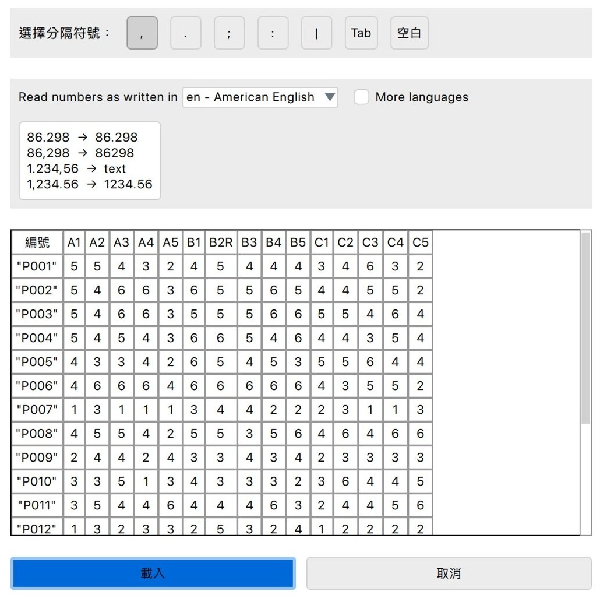
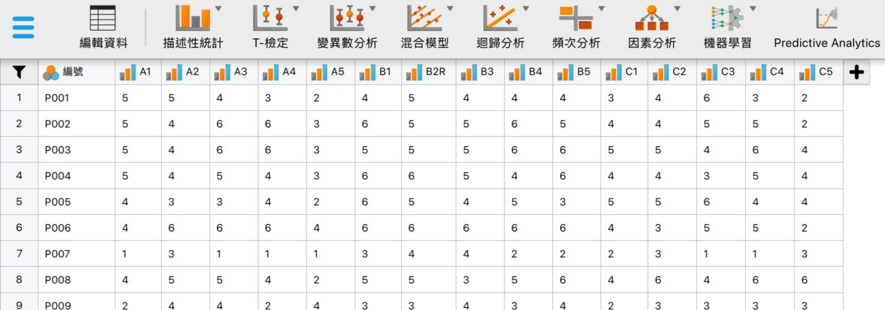
題目欄位顯示長條圖示，表示 JASP 把 1 到 6 的整數判定為次序變項（ordinal）。不需要改變數類型，因素分析時在 9.3 選「相關矩陣」即可。
9.2 選擇探索性因素分析並放入題目
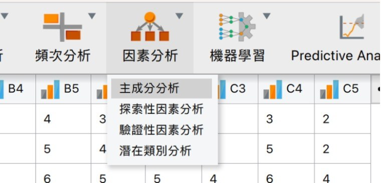
- 上方選單因素分析（Factor）→ 探索性因素分析（Exploratory Factor Analysis）。理由：第一項主成分分析把測量誤差也算進去，量表發展用共同因素分析（單元三 3.3）
- 左欄點第一題，按住 Shift 點最後一題，按中間的箭頭移到右邊的變項（Variables）。理由：所有向度的題目一起放，由資料決定每一題落在哪個因素；編號不是題目，不要放入
- 因素的個數維持平行分析法（Parallel analysis）。理由：比特徵值大於 1 準確（單元三 3.2）
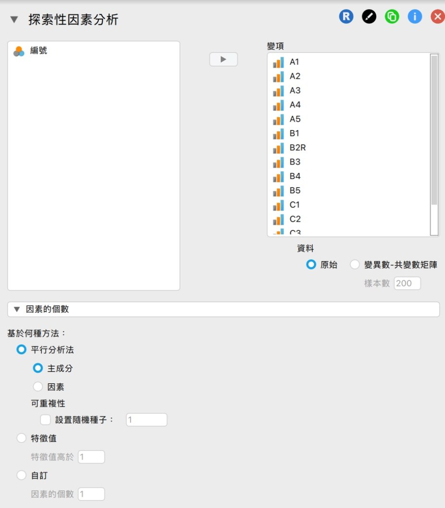
9.3 分析選項
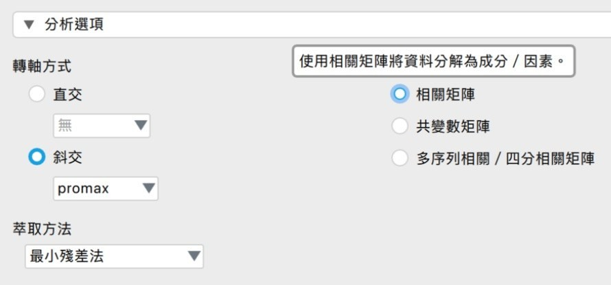
- 轉軸方式維持斜交（Oblique）、promax。理由：同一構念的向度彼此相關（單元三 3.4）
- 萃取方法維持最小殘差法（Minimum residual）。理由：屬於共同因素分析
- 依據…而分解資料改選相關矩陣（Correlation matrix）。理由：題目被判定為次序變項時，JASP 預設多序列相關矩陣；改用相關矩陣，才與 Excel 項目分析、信度使用同一種相關，數字可以互相對照
9.4 輸出選項
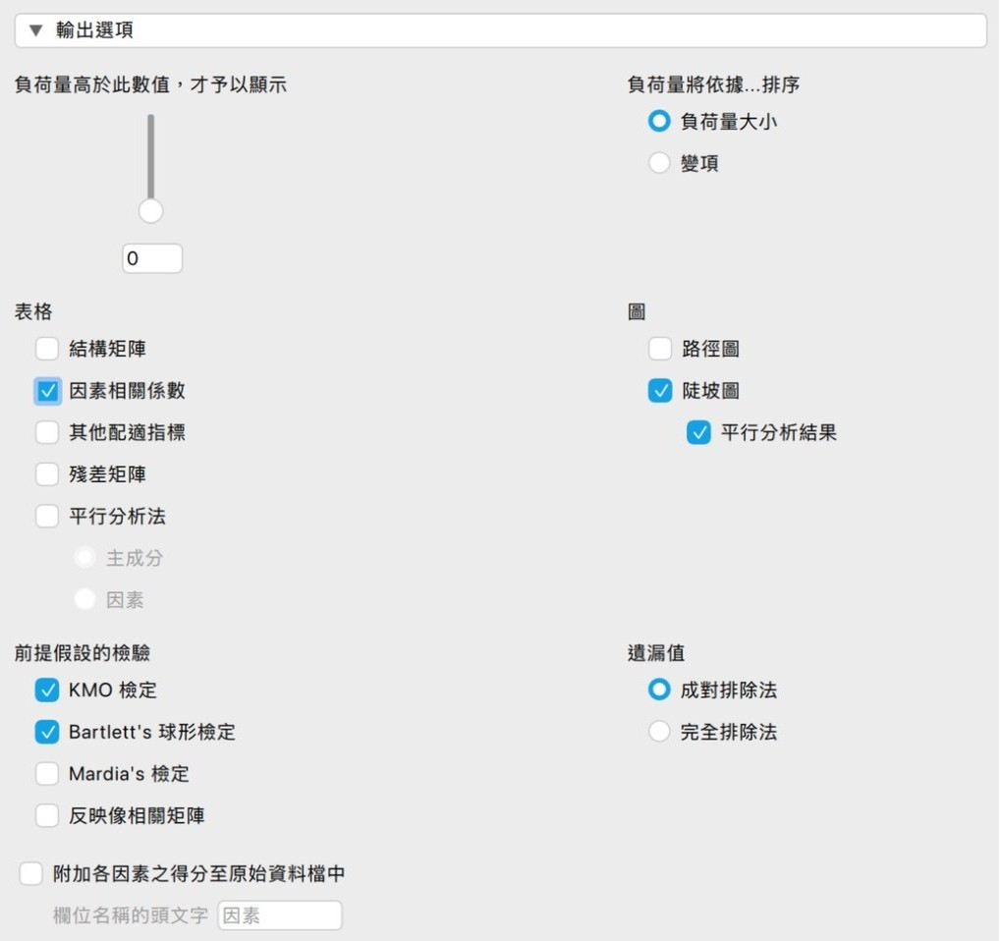
- 負荷量高於此數值才予以顯示：0.4 改成 0。理由：低於 .40 的格子會留白，看不到跨負荷
- 負荷量將依據變項排序。理由：照題號排列，容易對照預設向度
- 表格勾選因素相關係數。理由：斜交轉軸要報告因素之間的相關
- 圖勾選陡坡圖；前提假設的檢驗勾選 KMO 檢定與 Bartlett's 球形檢定。理由：確認資料適合做因素分析，並檢查因素數目
| 英文介面 | 中文介面 | 設定 |
|---|---|---|
| Factor | 因素分析 | 上方選單 |
| Exploratory Factor Analysis | 探索性因素分析 | 點選進入 |
| Variables | 變項 | 放入所有題目 |
| Number of Factors：Parallel analysis（Based on PC） | 因素個數：平行分析法（主成分） | 維持預設 |
| Rotation：Oblique，promax | 轉軸：斜交，promax | 維持預設 |
| Factoring method：Minimum residual | 萃取方法：最小殘差法 | 維持預設 |
| Base decomposition on：Correlation matrix | 依據…而分解資料：相關矩陣 | 改選相關矩陣 |
| Order loadings by：Variables | 負荷量將依據…排序：變項 | 改選變項 |
| Tables：Factor correlations | 表格：因素相關係數 | 勾選 |
| Output Options：Display loadings above | 輸出選項：負荷量顯示門檻 | 從 0.4 改成 0 |
| Assumption checks：KMO test、Bartlett's test | 前提假設的檢驗：KMO 檢定、Bartlett's 球形檢定 | 勾選 |
| Plots：Scree plot | 圖形：陡坡圖 | 勾選 |
9.5 讀輸出
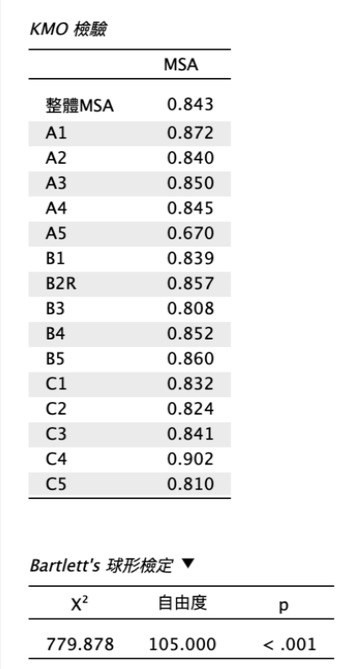
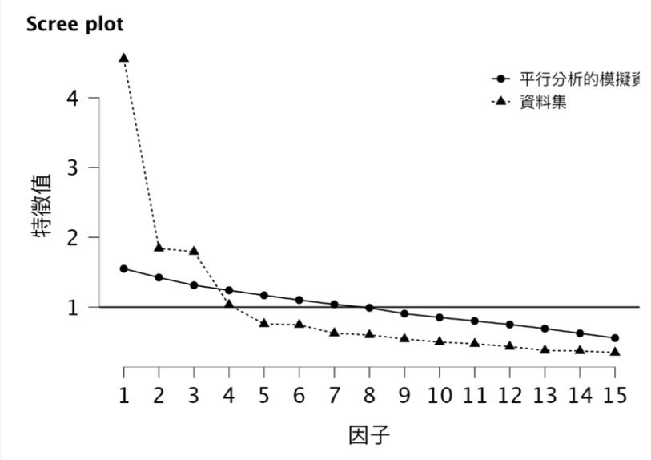
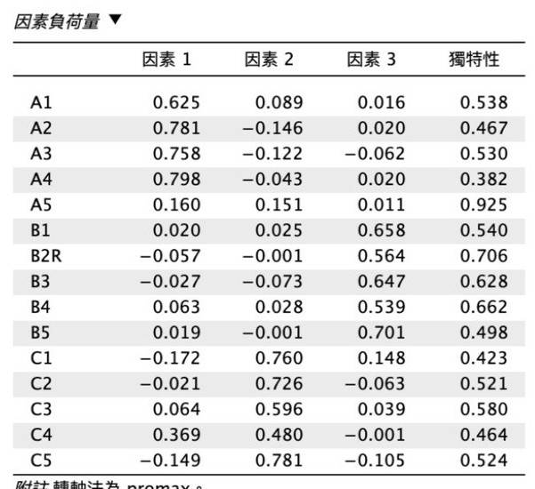
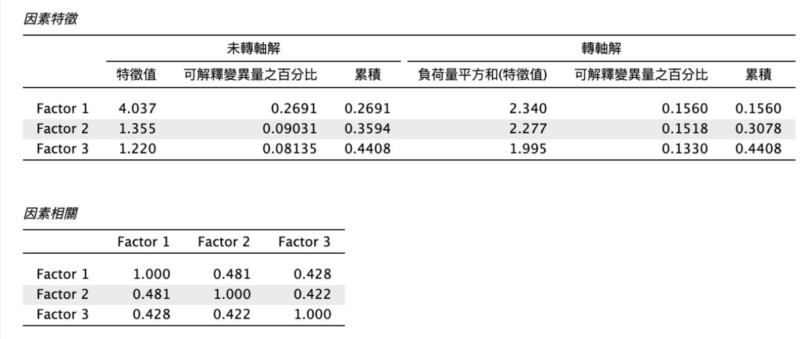
| 英文介面 | 中文介面 | 用途 |
|---|---|---|
| Kaiser-Meyer-Olkin Test：Overall MSA | KMO 檢驗：整體 MSA | KMO 值 |
| Bartlett's Test | Bartlett's 球形檢定 | χ²、自由度、p 值 |
| Factor Loadings | 因素負荷量 | 負荷量表 |
| Uniqueness | 獨特性 | 共同性 ＝ 1 − 獨特性 |
| Factor Characteristics：SumSq. Loadings | 因素特徵：負荷量平方和 | 每個因素解釋的變異 |
| Proportion var.／Cumulative | 可解釋變異量之百分比／累積 | 解釋變異量 |
| Factor Correlations | 因素相關 | 因素間相關 |
9.6 刪題後重跑
在右邊的變項中點選要刪的題目，按中間的箭頭或雙擊，題目回到左欄就不列入分析，結果自動重算。一次刪一題，理由：刪一題之後，其他題目的負荷量也會改變。每次重跑都截圖，放進附錄 B 的分析紀錄。
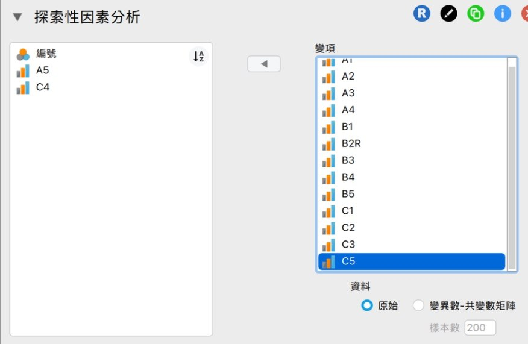
9.7 信度
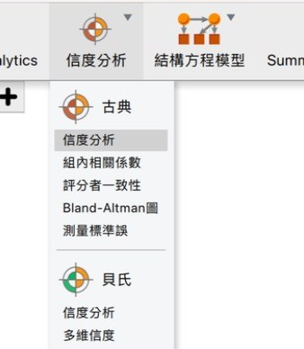
- 上方選單信度分析 → 古典 → 信度分析。上方沒有信度分析時，從右上角＋號勾選 Reliability 模組
- 每個向度分別跑一次，只放該向度保留下來的題目。理由：α 假設題目測同一件事，要逐向度計算
- 量表統計量勾選 McDonald's ω 與 Cronbach's α。理由：ω 的假設較少，α 最常見，兩者並報
- 個別題項統計量勾選兩個「若刪除此題項」與「題項-總分相關」。理由：確認每一題對信度都有貢獻
- 反向題區不用設定。理由：反向題已在 Excel 轉換，再設定會被轉回去
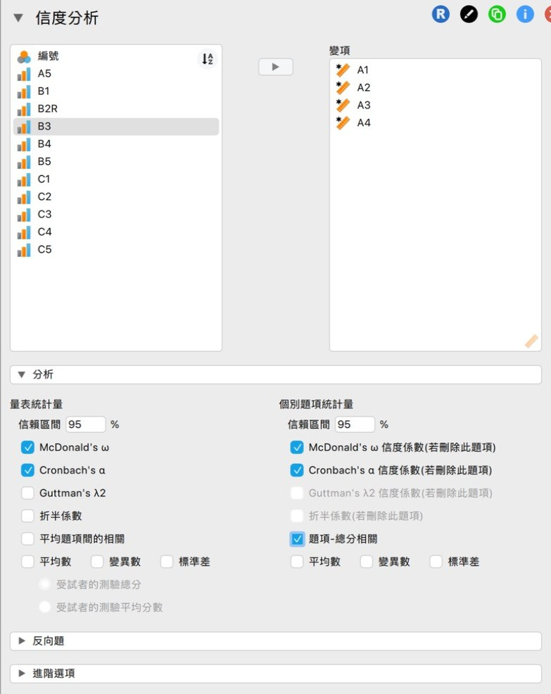
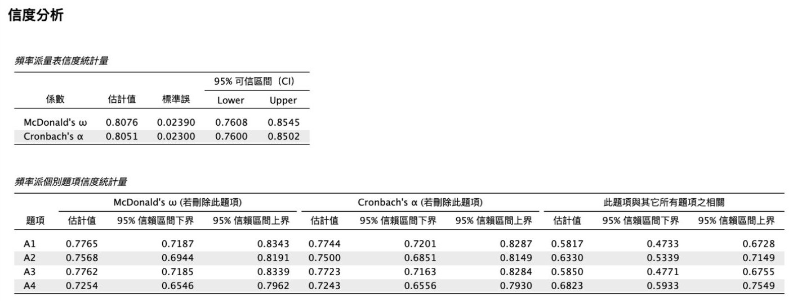
| 英文介面 | 中文介面 | 設定 |
|---|---|---|
| ＋（Modules） | ＋（模組） | 上方沒有信度分析時，勾選 Reliability 加入選單 |
| Reliability → Classical → Reliability | 信度分析 → 古典 → 信度分析 | 每個向度跑一次 |
| Scale Statistics：McDonald's ω | 量表統計量：McDonald's ω | 預設勾選 |
| Scale Statistics：Cronbach's α | 量表統計量：Cronbach's α | 勾選 |
| Individual Item Statistics：α / ω (if item dropped) | 個別題項統計量：Cronbach's α 與 McDonald's ω 信度係數(若刪除此題項) | 勾選 |
| Individual Item Statistics：Item-rest correlation | 個別題項統計量：題項-總分相關（輸出表名稱：此題項與其它所有題項之相關） | 勾選 |
| Reverse-Scaled Items | 反向題 | 資料已反向時不用放 |
單元十：參考文獻
作業說明：期中團體作業 新概念量表設計